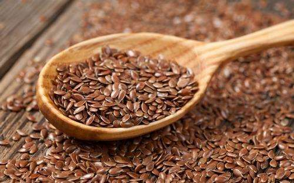
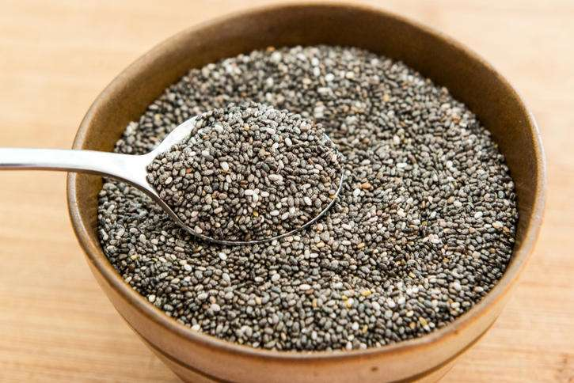
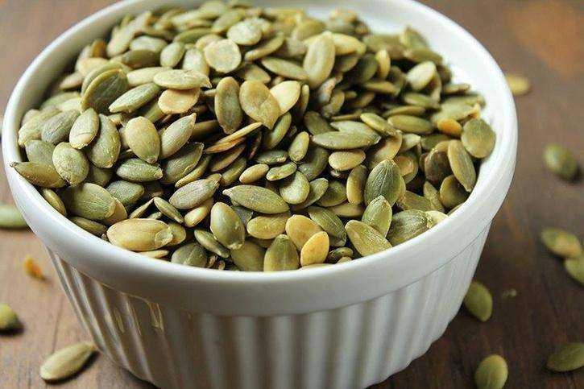
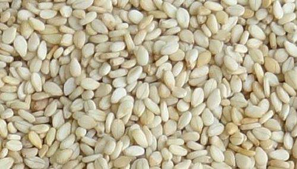
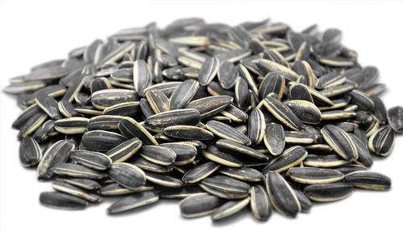
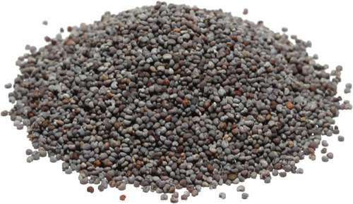
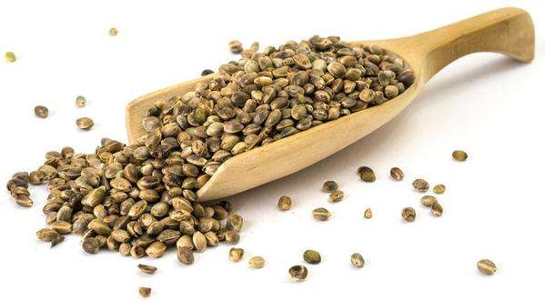
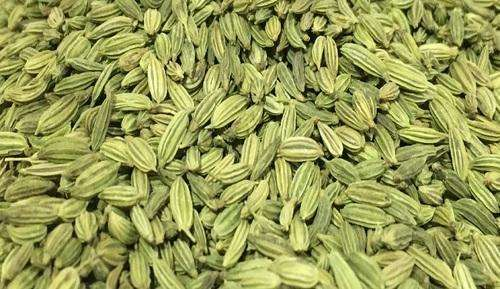
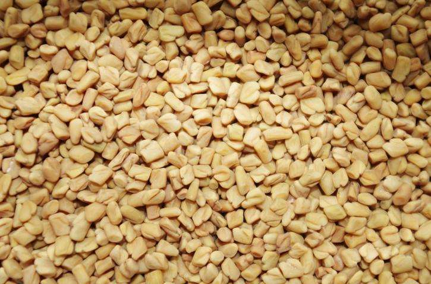
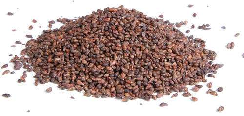

| 1 |
Flax |
Protein |
- Flaxseed fiber aids digestion
- Flaxseed may help lower cancer risk
- Flaxseed might curb diabetes risk
|
 |
| 2 |
Chia |
Protein |
- Chia Seeds Deliver a Massive Amount of Nutrients With Very Few Calories
- Almost All the Carbs in Them Are Fiber
- Chia Seeds Are High in Quality Protein
- Chia Seeds Are High in Omega-3 Fatty Acids
- Chia Seeds May Lower Your Risk of Heart Disease
|
 |
| 3 |
Pumpkin |
Protein |
- Full of Valuable Nutrients
- High in Antioxidants
- Linked to a Reduced Risk of Certain Cancers
- Improve Prostate and Bladder Health
- Very High in Magnesium
|
 |
| 4 |
Sesame |
Vitamin B6 and Vitamin E |
- May Lower Cholesterol and Triglycerides
- Nutritious Source of Plant Protein
- May Help Lower Blood Pressure
|
 |
| 5 |
Sunflower |
Vitamin B6 |
- Sunflower Seeds Boost Your Heart Health
- Sunflower Seeds Help to Prevent and Fight Sickness
|
 |
| 6 |
Poppy |
protein |
- Improvement of Fertility
- Fights insomnia
- Bone Strength
|
 |
| 7 |
Hemp |
Protein |
- Improve skin conditions
- Relieve rheumatoid arthritis
- Reduce inflammation
|
 |
| 8 |
Feennel |
Vitamin C |
- Helps Regulate Blood Pressure
- Fennel Seeds Reduce Asthma
- Helps Purify Blood
- Improves Eyesight
- Great for Acne
|
 |
| 9 |
Fenugreek |
Minerals |
- Reduce fever
- Soothe muscle pain
- Balance cholesterol
|
 |
| 10 |
Grape |
Fat |
- May reduce cancer risk
- Can reduce blood pressure
- Can improve kidney function
|
 |